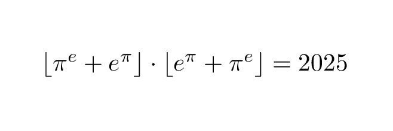

Итоги 2024
Вот и подошел к концу этот год
И ведь за этот год многое успело случиться. И ведь не скажешь, что он был хорошим или плохим однозначно для конкретного человека: есть у меня знакомые, для которых он прошел здорово; есть и те, кому он крайне не понравился

И я бы хотел для начала рассказать больше для себя, но прежде промолвил бы, что... мир однозначно сошел с ума? Я так говорил очень много, но ведь есть немало здравомыслящих людей. И, уже поэтому я был бы не прав
Конечно, нет. Если кто-то и потерял рассудок — так только те, кому этот мир подвластен. Конечно и кажется со стороны, что все горит, что все идет ко дну. Но давайте закроем новостные книги хотя бы в этот час. Рассудок остался как минимум у нас. У простых людей. И нужно его сохранить — только так и получится все то, чего мы хотим. Только так все и вернется на круги своя — рано или поздно
Recap
Что-ж, 2024 я встретил... в тильте. У меня были некоторые переживания. Были опасения. Да и сессию я хоть сдал, но я не был доволен. В феврале из-за отсутствия заграна я не смог полететь на международную олимпиаду. А БРИКС сместил семестр, из-за чего нагрузка стала почти непосильной. И вот, снова какое-то меланхоличное настроение 1 января. Но плохо ли все на самом деле?..
Конечно же нет!
По сути, все вот эти вот "грустные моменты" я мог уместить в одну выноску. Это даже яйца выеденного не стоит!
За этот год я очень многое успел, я очень многое сделал и еще больше наметил. И по порядку:
Достижения
- Прежде всего, я нашел новых друзей, а с многими приятелями стал общаться куда ближе и теплее. В некотором роде, я, все-таки, смог побороть чувство одиночества
- Я смог перестать бегать за людьми, смог получать общение в должном объеме
- Я узнал много нового и более прикладного. Начал заниматься более приближенными к моим интересам делами. Я в целом начал создавать свои проекты! Сайты, самоделки, каналы. Пока что они не сильно впечатляют, но я просто рад, что делаю их
- В целом, нашел себя. Мне стало проще общаться с многими и многое стало проще принимать. Я не помню чтобы последние недели вообще было какое-то чувство беспокойства. Я бы не сказал, чтобы тревожился в серьез
- Я начал гораздо больше думать, размышлять. Я стал более осознанным. Я, можно сказать, повзрослел, а не постарел в этом году
- Я встретил самый крутой день рождения (тык на этот текст) за последние годы
- Я был на летнем университете с лучшим другом, а там и гуляли всю ночь и общались на английском. Это был крутой опыт общения с иностранцами
- Я начал изучать машинное обучение — вещь, которая мне интересная настолько же давно, насколько я вообще знаком с компьютером (хотя, это не то чтобы очень много)
- Я начал программировать микроконтроллеры — а вот этим хотеть начать заниматься даже раньше. И, что предыдущий пункт, что этот, парадоксально, не был бы выполнен, если бы не БРИКС, который, вроде как, помешал мне
- Я навестил бабушку и дедушку в селе — путь огромен и тяжек — несколько дней в машине. Созидал и будто снова открывал для себя свои края
- Я начал интересоваться культурой — посещал как храмы, так галереи. Честно говоря, раньше бы мне это и не было особо интересно. Но я начал ловить суть этого занятия
- Я создал себе резюме. Меня же и рекомендовали различным людям, как работника. Так что, возможно, в следующем году я уже начну зарабатывать любимым делом
- Вообще, хоть мне и давалась высшая математика весь первый курс, сейчас я начал потихоньку уметь применять ее в реальной жизни. Именно высшую математику. Те самые дифференциальные уравнения, интегралы... Это... круто)
- В конце концов, я выжил

Взвешивая все это я могу сказать, что... снова отличия меня настоящего от прошлого уже достаточно велики для того самого чувства, для того, чтобы ловить себя на мысли "Эх, вот раньше я был таким кринжом. Как хорошо что я сейчас именно я настоящий"
И что дальше?
Вообще, для того, чтобы этот год был хорошим достаточно исполнение одного желания, о котором я и писал тут
Тем не менее я ведь энтузийный и все такое, так ведь?
Планы
- Я часто желаю всем в своей манере "любить и быть любимым". Тем не менее хочу и сам этого себе пожелать в том самом смысле
- Написать текстовый ИИ-квест
- Закрыть сессию
- Больше высыпаться
- Реализовать свой тот самый стартап
- Попасть в научную комманду, писать научные работы
- Найти работу по душе
- Начать посещать научные конференции
- Попасть на летний университет в этом году
- Попасть на тот самый межнар в этом году — загран то теперь есть)
- Встретить еще один крутой день рождения
- Выжить
Как-то, конечно, где-то звучит по детски. Но к чему тут серьезность? Я считаю, что она как-то излишня. Праздник ведь. Да и нельзя ведь точно знать, чего именно я еще захочу, правда? — Вот и написал то, что пришло на ум
С новым годом!